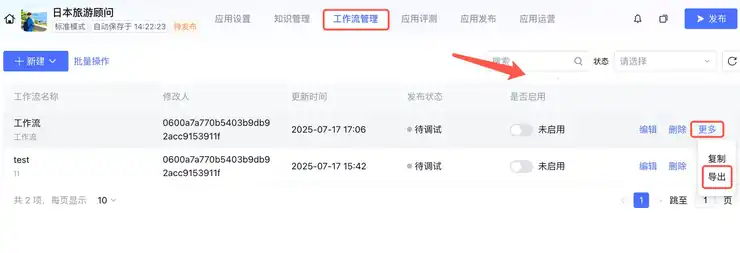
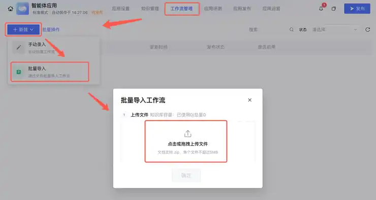
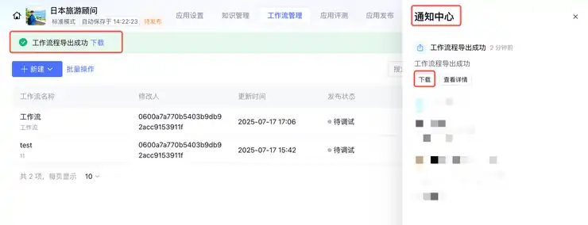

第六章｜AIGC应用与实践 · 第24次课 · 2 学时
流程封装与交付说明：让同伴可以复现
00 知识回顾
上一课给流程加上不同输入的处理路径。本课把入口、材料、操作与结果说清楚，让别人不用猜就能使用。
01 任务预告
本课成果： 一页流程使用说明，配一条可复制的体验材料。说明写实际按钮和输入，不把“形成闭环、完成协同”当步骤。
02 基础概念
1｜封装：让使用者少管内部细节
封装是给已经能运行的流程设置清楚的使用入口、输入要求和输出样式。使用者不必理解每个提示词，但要知道带什么材料、点击哪里、出现什么结果。
例子： “输入一段物品和状态说明，点调试发送，得到介绍或补问”比“执行AI协同流程”更可操作。
2｜使用说明：按实际动作写
一页说明覆盖用途、准备材料、进入方式、操作、结果和常见问题。它不是软件功能大全，也不用复述全部课堂概念。
例子： “在工作流管理打开闲置介绍，点右上调试，粘贴材料发送”是一条能执行的说明。
3｜复制与分享：转移配置，不转移账号
导入导出或复制功能可以帮助转移流程配置，但使用者仍需要自己的账号和对应工具权限。给一个流程截图不能自动变成可运行入口；分享账号密码也不是交付方法。
例子： 在元器导出流程后，另一个应用通过新建导入；导入后仍要查看输入引用与可用模型。
03 核心案例
教师示范｜把闲置介绍变成一页说明
材料： 上两课的工作流，体验输入“白色台灯，用半年，三档正常，底座擦痕，附电源线”。本课只整理已完成的功能，不让AI把预想功能写成已有功能。
操作①｜先列真实使用路径
| 使用说明 | 本例写法 |
|---|---|
| 用途 | 根据已知物品状态生成介绍草稿 |
| 准备 | 物品名称＋一条使用或外观状态 |
| 进入 | 元器应用→工作流管理→闲置介绍→调试 |
| 操作 | 输入材料，发送，等待回复 |
| 结果 | 正常材料得到介绍；缺信息得到补问；矛盾状态得到澄清提示 |
| 不包含 | 实际发布、定价、交易或联系买家 |
操作②｜用AI压缩说明，自己补实际入口
在豆包或千问粘贴上表，发送下面的要求。生成后把含糊的“打开系统”换成自己实际使用的页面与按钮。
把下面的已有流程信息写成一页使用说明，包含用途、准备材料、实际进入路径、操作、结果和两条常见问题。每步写可点击或可输入的动作，不增加未实现功能，不写提交命名或压缩要求。
流程信息：【粘贴本课表格，并替换成自己的实际入口】
操作③｜认识配置怎样转移

工作流管理列表的导出入口用于获取所选流程配置，不等于公开发布应用。

目标应用从新建的导入入口选择流程文件；普通作品材料不能作为平台流程配置导入。
若要给另一个应用复用，在工作流管理导出所选流程，再到目标应用导入；导入后查看模型权限与变量来源。本课的核心成果仍是一页清楚说明，不要求所有人另建应用。
参考： 元器跨应用复制工作流。

导出菜单提供工作流配置导出；导出配置不包含另一个账号的授权。
04 实践任务｜给自己的流程写一个能用的入口
操作①｜用一页说明自己的作品
可以沿用闲置介绍，也可用自己之前的商品比较或周报整理。把真实用途、输入、入口和结果写进上面的说明结构，再让AI整理语句。不要写没有做过的自动发布或数据库功能。
操作②｜选择一处最容易卡住的位置
例如模型权限、忘记引用变量、回复区无输出。把对应界面的截图放到说明中，只标需要点击的位置或要看到的状态。说明常见问题时直接写解决动作，如“回复空白时查看answer是否引用最终节点Content”。
操作③｜自己按说明走一遍
回到入口，只看说明处理一条新材料。卡住时改该句，不扩写软件百科。若作品只有分步聊天，明确写先在哪一款AI输入、再把哪段结果复制到下一步，不把手动复制说成自动调用。
最后看三项： 输入材料明确；每步有位置和动作；结果与已有功能一致。成果：一页使用说明和一份体验材料。
05 本课总结
一个流程能被别人使用，需要清楚入口、适合的材料和可解释的结果。交接不靠账号共享，也不靠只展示一张成品图。
下节预告： 进入2—3人小组项目，用五次制作课完成一条校园或办公小流程，按同一项目逐步完善。